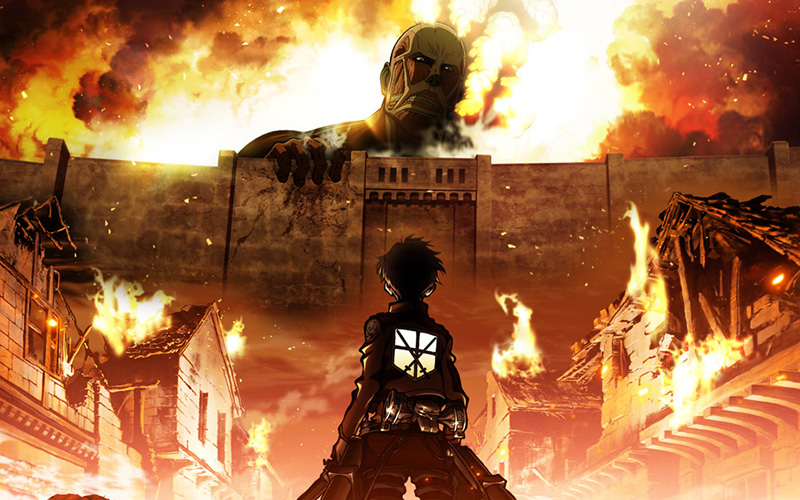

attack on titan
เนื้อเรื่อง ผ่าพิภพไททัน มีศูนย์กลางอยู่ที่อารยธรรมภายในกำแพงวงกลมสามชั้น ความรู้ที่เผยแพร่ในท้องถิ่นบันทึกว่ามันเป็นร่องรอยสุดท้ายของอารยธรรมมนุษย์ที่ยังหลงเหลืออยู่ ผู้อยู่อาศัย (ชาวเอลเดีย) ถูกทำให้เชื่อว่าเมื่อร้อยกว่าปีที่แล้ว มนุษยชาติถูกทำให้เกือบสูญพันธุ์หลังการปรากฏตัวของยักษ์คล้ายมนุษย์ที่มีชื่อว่า ไททัน ที่โจมตีและกินมนุษย์ที่มันมองเห็น มนุษยชาติส่วนที่เหลือหลบซ่อนหลังกำแพงร่วมศูนย์กลางสามแห่ง และดำรงชีวิตอย่างสงบสุขประมาณศตวรรษหนึ่ง ความคิดของคนในกำแพงที่จะออกไปข้างนอกไม่เป็นที่ยอมรับอย่างมากและไม่ส่งเสริม เพื่อต่อสู้กับพวกไททัน
ไททันมมีหลายประเภท โดยไททันบริสุทธิ์เป็นพวกที่อ่อนแอที่สุดและพบได้มากที่สุด พวกมันมีพฤติกรรมที่ทำนายได้ง่าย ทำให้มันถูกฆ่าได้ง่าย ส่วนไททันผิดปกติเป็นไททันบริสุทธิ์ที่มีพฤติกรรมที่ทำนายได้ยากกว่า ทำให้มันอันตรายกว่า ไททันทั้งเก้า ซึ่งมีอีกชื่อว่า ไททันสติปัญญา (Attack, Colossal, Armored, Female, Beast, Jaw, Cart, War Hammer และ Founding) เป็นไททันที่แข็งแกร่งที่สุด แต่ละตัวสามารถเปลี่ยนรูปร่างระหว่างมนุษย์และไททันเพื่อเข้าถึงทักษะของไททัน ผู้กลายร่างเป็นไททันหลายคนมีทักษะที่ทำให้ร่างกายส่วนหนึ่งแข็งแกร่งขึ้น
ไททันบริสุทธิ์สามารถสร้างได้ด้วยการนำชาวเอลเดียมีฉีดน้ำหล่อสมองไขสันหลังของไททันประเภทนั้น ถ้าไททันบริสุทธิ์กินร่างมนุษย์ที่มีหนึ่งในทักษะไททันสติปัญญาทั้งเก้า ชาวเอลเดีบคนนั้นจะกลับร่างไปเป็นมนุษย์และได้รับพลังเปลี่ยนร่าง หลังจากนั้นพวกเขาก็จะถูกสาปให้มีชีวิตเพียง 13 ปี ถ้าพลังของพวกเขาไม่ได้สืบทอดให้แก่ชาวเอลเดียอีกคนก่อนตาย พลังนั้นก็จะส่งต่อไปให้ทารกชาวเอลเดียในภายหลัง โดยไม่คำนึงถึงระยะห่างหรือความสัมพันธ์ทางสายเลือด